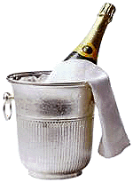

Проведённые ранее эпидемиологические исследования продемонстрировали наличие обратной связи между потреблением красного вина и сердечно-сосудистой заболеваемостью. Вместе с тем кардиопротективный потенциал шампанского вина пока не был достаточно изучен.
Проведённые ранее эпидемиологические исследования продемонстрировали наличие обратной связи между потреблением красного вина и сердечно-сосудистой заболеваемостью. Вместе с тем кардиопротективный потенциал шампанского вина пока не был изучен в достаточной степени.

Целью проведённого в Великобритании рандомизированного плацебо контролируемого перекрёстного исследования с участием здоровых добровольцев было оценить способность шампанского влиять на сосудистый тонус. По мнению исследователей, именно шампанское, а не контрольный напиток, идентичный по содержанию алкоголя, углеводов и фруктовых кислот, способно резко изменять эндотелий-независимую вазодилатацию, которая определялась через 4 и 8 часов после употребления каждого алкогольного напитка. Шампанское и контрольный напиток индуцировали повышение эндотелий-зависимой сосудистой реактивности спустя 4 часа после их употребления. Однако значимого различия между влиянием на сосудистый тонус, индуцированным употреблением шампанского или контрольного напитка в любой отрезок времени, выявлено не было. Данные эффекты сопровождались резким снижением концентраций матричной металлопротеиназы (MMP-9), значительным снижением уровней свободных радикалов в плазме и повышением экскреции с мочой ряда фенольных метаболитов. В частности, средние значения общей экскреции гиппуровой, протокатехиновой и изоферулиновой кислот были значительно выше после употребления шампанского по сравнению с контрольным напитком.
Полученные данные позволяют предположить, что ежедневное умеренное употребление шампанского может в значительной степени улучшить состояние сосудистой стенки посредством фенольных метаболитов, которые способны улучшать биодоступность NO и снижать активность матричной металлопротеиназы.
Vauzour D, Houseman E.J., George T.W., Corona G., Garnotel R., Jackson K.G., Sellier C., Gillery P., Kennedy O.B., Lovegrove J.A., Spencer J.P.
Moderate Champagne consumption promotes an acute improvement in acute endothelial-independent vascular function in healthy human volunteers.
Br J Nutr. 2009: 1-11.
PS: Интересно, а что подразумевается под умеренным ежедневным потреблением шампанского?